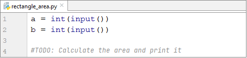

Chapter 1. First Steps in Programming
In this chapter we are going to find out what programming is at its core. We will get familiar with the idea of programming languages and explore the environments for software development (Integrated Development Environment – IDEs); we'll see how to work with them, in particular with PyCharm. We will write and execute our first program written in the programming language Python and then we'll exercise on a few tasks: we will create a console-based program, a graphical application and a Web application. We will learn how use SoftUni's Judge System to check the correctness of our solutions to the problems in this book. Finally, we'll look at some typical mistakes made during code writing and we'll learn how to avoid them.
Video
What does 'To Program' mean?
To program means to give instructions to the computer, for example play a certain sound, print something on the screen or multiply two numbers. When there's a series of commands, we have a computer program (script). The computer program's text is called program code (source code or just code).
Computer programs
Computer programs represent series of commands written in a particular programming language, like Python, C#, Java, JavaScript, Ruby, PHP, C, C++, Go etc. In order to write commands, we need to be familiar with the syntax and semantics of the language we'll be using, in our case – Python. In this book we'll cover programming in general, as well as Python's particular syntax and semantics. We'll examine each step of writing code, starting with the simplest and eventually reaching more complex programming constructs.
Algorithms
Computer programs usually execute some sort of algorithm. Algorithms are series of steps used to complete a task and achieve an expected result - something like a recipe. For example, if we need to fry some eggs, we follow a certain recipe (algorithm): we heat some oil in a pan, then we break the eggs, we wait until they're cooked, and finally move the pan away from the heat. Similarly, in programming, computer programs execute algorithms – series of commands needed to complete a certain task. If we want to print a series of numbers in ascending order, for example, we need an algorithm. It will go through all the numbers, find the smallest one and print it, then go through the rest of them and do the same until there are no more numbers left. To make creating programs, writing program code (commands), executing it and other operations that have to do with programming more convenient, we need a development environment (IDE) like PyCharm.
Programming languages, compilers, interpreters and development environments
Programming languages are an artificial languages (syntax for expression), designed to issue commands which we expect the computer to read, process and execute. With the help of programming languages we write series of commands (programs) which tell the computer what to do. Execution of computer programs can be achieved by using either a compiler or an interpreter.
The compiler translates code from a programming language into machine code and for each construct (command) in the code, it chooses an appropriate, predefined fragment of machine code while simultaneously checking the program's text for errors. Together, all the compiled fragments represent the original program translated in machine code, exactly how the computer's microprocessor is expecting it. After it's been complied, the program can be directly executed by the microprocessor in cooperation with the operation system. Compiled programming languages compile the program before executing it and find syntactic errors (incorrect commands) during compile time. Languages like C++, C#, Java, Swift and Go work with compilers.
Some programming languages don't use a compiler, but are directly interpreted by specialized software called an interpreter. The interpreter is a program that executes programs, written in some programming language. It executes the program's commands in sequence, and understands not only single commands and series of commands, but also other language constructs (checks, iterations, functions etc.). PHP, Python and JavaScript are languages that work with an interpreter and are executed without the need to be compiled. Due to lack of preliminary compilation, interpreted languages' errors are found during run time, after the program has already started working.
Overall, compiled languages work more slowly than their interpreted counterparts. The difference in execution speed is sometimes insignificant, but in other cases massive. In interpreted programming languages we can change code more quickly and re-execute (in order to remove a mistake, for example), while compiled languages are slower after a change in code has been introduced, due to the need for compilation.
The development environment (Integrated Development Environment – IDE) combines traditional instruments for software development. In the development environment we write code, compile and execute programs. Development environments incorporate a text editor for writing code, a programming language, a compiler or interpreter, an execution environment where our program is executed, a debugger which traces our program and looks for errors, instruments for design and user interface as well as other instruments and add-ons.
Development environments are convenient because they incorporate everything necessary to develop a program, so there's no need to leave the environment. If we don't use a development environment, we'll have to write code in a text editor, compile it with a command from the console, execute it with another command from the console and write additional commands, when needed, which will cost a lot of time. This is why most programmers use IDEs for everyday work.
Programming with Python is usually done in the development environment PyCharm which is developed and distributed by JetBrains. You can download it from: https://www.jetbrains.com/pycharm. Here's what the PyCharm environment looks like in action:

Alternatives to PyCharm for writing code in Python are Visual Studio Code (https://code.visualstudio.com), Atom (https://atom.io), Eclipse for Python (https://www.eclipse.org) together with the add-on PyDev (https://pydev.org) and others. In this book we'll use the development environment PyCharm.
Alternatives to desktop development environments (IDE) are online environments for Python programing such as Repl.it and PythonAnywhere. They're great for testing short examples, when we cannot install an IDE locally, or when we want to easily share our code with colleagues. Here's an example of how to execute Python code in Repl.it:

Low-Level, High-Level Languages and Runtime Environments
A program is, in essence, a set of instructions that ask the computer to carry out certain tasks. They are entered by the programmer and executed unconditionally by the machine.
There are different types of programming languages. Lowest-level languages can be used to write the very instructions commanding the processor - Assembler is one such language. Higher-level languages can be utilized to create an operating system, drivers for managing hardware (video card drivers, for example), web browsers, compilers, engines for game graphics (game engines) and other system components and programs. Even higher-level languages like JavaScript, C# and Python are used to create application software, like programs for reading mail or chatting.
Low-level languages command hardware directly and require a lot of effort and a vast number of commands, to carry out a certain task. Higher-level languages require less code to achieve the same result, but have no direct access to hardware. They are used to develop application software like web and mobile applications.
Most of the software we use on a daily basis like music players, video players, GSP programs etc. is written on high-level languages for application programming like Python, JavaScript, C#, Java, C++, PHP etc.
Python is an interpreted language which means we write commands and they're executed immediately after running the program. As a result of that, we will realize we've made a mistake in our code only after we've started our program and reached the incorrect command. In cases like these, IDEs like PyCharm are extremely helpful as they check our code while we're writing it and alarm us of potential issues. After we've written our code and want to test it, we can save it in a file with extension .py.
Python Interpreter: Installation and Use
In order to program in Python, we first need to install a Python interpreter. It executes commands and runs programs, written in Python, and is essential if we want to use Python on our computer.
Installing the Python Interpreter
Installing Python is quite simple. Just go to https://python.org/downloads and download the latest version for your platform.

On Windows the installation is a straightforward process of clicking [Next], [Next] and [Finish]. On Linux, you need to use a package installer like sudo apt-get install python3.
| In Python we don't use a semicolon (;) в края на at the end of each command. Commands are separated by a new line or by indentation. |
A missing quotation mark or closing bracket can also cause issues – the program will either function improperly or not execute at all. Such mistakes are hard to notice, especially with larger amounts of code. Here's an example:
print('Hello Python)
This program will return an error and the code will be underlined to draw the programmer's attention to the missed closing bracket.

What did we learn in this chapter?
First of all, we learned what programming is – issuing commands written in a programming language which the machine can understand and carry out. We also found out what a computer program is – a series of commands that aim to achieve a certain result. We gained some basic knowledge of the Python programming language and learned how to create simple console programs using PyCharm. Then we examined Python's program code structure. We looked at printing with the function print(...) and starting the program with [Ctrl + Shift + F10]. And last but not least, we now know how to test our code in SoftUni's Judge System.
Top work! Let's now tackle the exercises. You do remember that learning how to program involves a lot of code writing and problem-solving, right? Let's do just that and put what we've learned into practice.
First Steps in Programming – Exercises
Welcome to the exercises. We are now going to write a couple of console applications, which will help us make a few more steps into programming. After that we will show you how to program something more complex – programs with graphical and web user interface.
Problem: console-based program 'Expression'
Write a console-based Python program that calculates and prints the value of the following numerical expression:
(3522 + 52353) * 23 - (2336 * 501 + 23432 - 6743) * 3
Note: you are not allowed to previously calculate the value (for example with Windows Calculator).Hints and Guidelines
Create a new Python file and name it Expression. Then we need to write the code which will calculate the numeric expression above and print its value on the console. Pass the expression to the print(...) command by writing it within its brackets:

Start the program with [Ctrl + Shift + F10] and check whether the result matches the one from the picture:

Testing in the Judge System
Test your solution here: https://judge.softuni.org/Contests/Practice/Index/1046#1.

Problem : Numbers from 1 to 20
Write a Python console program that prints the numbers from 1 to 20 on separate lines on the console.
Hints and Guidelines
Create a Python file and name it nums_1_to_20.py:

Inside the file write 20 print() commands, each on a separate line, in order to print the numbers from 1 to 20 one after another. Some of you may be wondering if there is a cleverer way. Don't worry, there is, but we will mention it later on.

Let's now start the program and check whether the result is what we're expecting:
1
2
…
20
Testing in the Judge System
Test your solution here: https://judge.softuni.org/Contests/Practice/Index/1046#2. Now try and think of a cleverer way we can write this program, to avoid repeating the same command so many times. Look up information for "for loop Python" on the Internet.
Problem: Triangle of 55 stars
Write a Python console program that prints a triangle of 55 stars on 10 lines:
*
**
***
****
*****
******
*******
********
*********
**********
Hints and Guidelines
Create a new Python file and name it triangle_of_55_stars.py. Inside we need to write code that prints our triangle, using 10 print() commands, like this:
print('*')
print('**')
…
Testing in the Judge System
Test your solution here: https://judge.softuni.org/Contests/Practice/Index/1046#3.
Try and improve your solution to avoid repeating the same command so many times. Can this be achieved with a for-loop? Did you manage to invent a better solution (with a for-loop, for example) to the previous problem? The current problem can be solved with a similar, but a little more complex approach (a loop within another loop). It's completely fine if you can't figure it out, you'll remember this problem when we learn about loops in a few chapters.
Problem: Rectangle Area
Write a Python program which receives two numbers a and b, then calculates and prints the area of a rectangle with sides a and b.
Sample input and output
| a | b | area |
|---|---|---|
| 2 | 7 | 14 |
| 7 | 8 | 56 |
| 12 | 5 | 60 |
Hints and Guidelines
Create a new Python file. We'll use the following commands to read our numbers:

What's left is to finish the program so it can calculate the rectangle's area and print it. Pass the product of a and b to the already familiar print(...) command. In programming we multiply using the * operator.
Test your solution
Test your solution with a few examples. You should receive a result identical to the one you see below (we enter 2 and 7 as input and the program prints 14 – their product, as output):
2
7
14
Testing in the Judge System
Test your solution here: https://judge.softuni.org/Contests/Practice/Index/1046#4.
* Problem: Square of Stars
Write a Python console program which reads an integer positive number N from the console and prints a square of N stars on the console, like in the examples below.
Sample input and output
| Input | Output | Input | Output | Input | Output |
|---|---|---|---|---|---|
| 3 | **** **** |
4 | ***** ** ***** |
5 | ****** ** ** ****** |
Hints and Guidelines
Create a new Python file. In order to read the number N (2 ≤ N ≤100), we use the following code:

Finish the program so that it prints a square made up of stars. You may need to use for-loops.
Caution: this task is more difficult than the rest and is presented to you at this point purposefully. It's marked with a star, in order to provoke you to look for information on the Internet. This is one of the most important skills you have to develop while you're learning programming. This is what you'll be doing every day if you work as a developer, so don't be scared, try it out. If you're having difficulties, you can also ask for help in the SoftUni forum: https://softuni.bg/forum.
Testing in the Judge System
Test your solution here:https://judge.softuni.org/Contests/Practice/Index/1046#5.
Console, Graphical and Web Applications
With console applications, as you've already noticed, all operations for reading input and printing output are done on the console. The input data is entered on the console and then it is read by the application; the console is also used to print the output data after or during the runtime of the program.
While a console application uses the text console, web applications use a web-based user interface. To execute them, two things are needed – a web server and a web browser. The browser plays the main role in the visualization of data and interaction with the user. Web applications are much more pleasant for the user, they look better, and a mouse and touch screen can be used (for tablets and smartphones). Programming stands under all of that, of course. This is why we need to learn how to program and we have already made our first tiny steps towards achieving that.
Graphical (GUI) applications have a visual user interface, directly on your computer or mobile device, without a web browser. Graphical applications (also known as desktop applications) contain one or more graphical windows where certain controllers are located (text fields, buttons, pictures, tables and others), which allow dialog with the user to be more intuitive. Similar to them are mobile applications on your smartphone or tablet: we use forms, text fields, buttons and other controls and we manage them with program code. This is why we learn to write code now: code is everywhere in software development.
Exercises: Graphical and Web Applications
We will now build a basic web application and after that a simple graphical application, in order to have a look at what we will be able to create once we progress with programming and software development. We are not going to examine the techniques and constructions used in much detail. Rather, we are just going to have a peek at the arrangement and functionality of what we've created. After we progress with our knowledge, we will be able to develop bigger and more complex software applications and systems. We hope that the examples given below will boost your interest, rather than make you give up.
Graphical application: 'Numbers Summator'
Write a graphical (GUI) application which calculates the sum of two numbers. After the numbers are entered in the first text fields, and the button [Calculate] is clicked, calculate their sum and display the result in the third text field colored in green:

We'll use the standard Python graphical library TKInter for our application (https://wiki.python.org/moin/TkInter. It enables us to create graphical (GUI) applications using the Python programming language.
Empty Python Project
Create a new Python project named "Summator-GUI" in PyCharm:

Add a new Python file named summator.py to the project. Then add tkinter as well:

Creating the basis for the GUI project
Next we need to write the code for our graphical application, starting with the basis:

We'll need the following components (controls):
- Entry – will enter the numbers that need to be calculated.
- Label – will serve to statically display text and the result of the calculation.
- Button – will calculate the sum of our numbers.

Let's initialize and visualize our controls (widgets):

And try to start our application with [Ctrl + Shift + F10] or right-click + [Run]. It should start but not function correctly, because we haven't specified what happens when the button is clicked:

Application Logic
Now we'll write the code responsible for summing our numbers and displaying the result in the third field. In order for that to work, we add the calculate command upon the button's initialization:

Then we'll write the calculate function's code:

This code takes the first number from the firstNumberEntry field and stores it in the first_value variable. Then it stores the second number from the secondNumberEntry field in the second_value variable. It sums first_value and second_value and stores the result in the result variable. Finally, it displays the text representation of the result variable in the resultLabel field.
Let's start the program again using [Ctrl + Shift + F10] or right click + [Run] and check whether it's working correctly. Try and calculate 4 + 5, then -2.5 + 1.5:


Managing invalid numbers
Entering invalid numbers like 'a' and 'b' seems to create issues:

This is due to the conversion of the information entered in our text field into a number. If the value in the field isn't a number, our program returns an error. We can fix the code to resolve this issue:

The code you see above intercepts number-handling errors (catches exceptions) and in case of an error, returns a Not number/s value in the result field. If we start our program once more and enter an improper value, the result is Not number/s and our program continues working as intended:


Does that seem complicated? If it does, that's completely normal. We are at the very start of our programming journey. The example above requires much more knowledge and skills, which we are going to develop using this book and later on as well. Just allow yourself to have some fun with desktop programming. Or bravely move forward to the next example or to the next chapter in the book. A time will come when this will to be easy for you, but you really have to put some effort and be persistent. Learning programming is a slow process involving lots and lots of practice.
Web Application: 'Numbers Summator'
Now we are going to create something even more complex, but also more interesting: a Web application that calculates the sum of two numbers. By entering two numbers in the first two text fields and clicking the [Calculate] button, their sum is calculated and the result is displayed in the third text field.
Keep in mind that we are creating a Web-based application. This is an application that is accessible through a web browser, just like your favorite email or news website. The web application is going to have a server side (back-end), which is written in the Python language with Flask (https://flask.palletsprojects.com) technology, and a client side (front-end), which is written in the HTML language (this is a language for visualization of information in a web browser). The Web application is expected to resemble the following:

As opposed to console applications which read and write data in the form of text on the console, Web applications have a Web-based user interface. Web applications are loaded from some Internet address (URL) through a standard web browser. Users write input data in a page, visualized by the web browser, the data is processed on a web server and the results are shown again on a page in the web browser. For our web application we are going to use Flask, a light Python library, which allows creating web applications with the programming language Python.
Next are the steps for implementation of the "Numbers Summator" web application.
Empty Python solution
We'll create an empty Python project in PyCharm to organize our application's code:

Then we need to give the project a meaningful name like "Summator-Web". We'll also set the Python interpreter to this one by default:

Installing Flask
Before we start writing code, we need to install Flask. Let's go to PyCharm's settings [File] -> [Settings] then go to [Project: Sumator-Web] -> [Project Interpreter]. There we need to click the + button:

When you find Flask in the window that appears, click [Install package]:

If all goes well, you'll receive the following message on the same screen:

Creating the Project Structure
Let's create the structure of our project. To do that, we'll create a Python file named app.py where we'll keep our program code. Then we need a folder which we'll call templates and an HTML file named index.html which will help visualize our content in the browser.

Writing the application's logic
Time to create our application's controls. The aim is to add fields where our numbers will be entered, a button for summing them and a place to display the result. We can achieve this by writing the following code in templates/index.html:

This code creates a web form <form> with a field and a button [Calculate] which will send the data from the form to our server. Our Python app.py file will be responsible for data manipulation. Notice the curly braces – they are used to switch between the HTML and Python languages and come from the Jinja2 syntax used for creating dynamic web pages.
After we've written the following code in app.py, we can test if our program is working by running it:

Next we need to write the code which will handle our request:

If we click the calculation button now, our program will be able to sum the two digits from the form. Let's run the program again and test whether it's working correctly. Upon entering the numbers 9 and 11, we'll receive a correct result:

Managing invalid numbers
If we try entering invalid data, we'll receive an error:

In order to handle the error, we need to write the following code:

This is not the best solution for error handling, but it will work.
If we run the program one more time and test it by entering invalid data, we'll receive the Not number/s. message.

Does all this seem scary? There's no need to be afraid. We have a lot more to learn, to reach the level of knowledge and skills required to write web-based applications with ease like in the example above, as well as much bigger and more complex applications. If it all makes little sense, just keep going without worrying. In time, you will remember with a smile how incomprehensible and exciting your first collision with web programming was.
The purpose of both examples (graphical desktop application and web application) is not to teach you, but to allow you to dive a little deeper into programming, to fuel your interest towards software development and to inspire you to study hard. You have a lot more to learn, but it is interesting, isn't it?